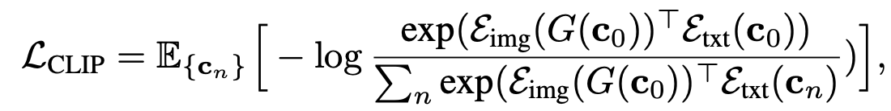
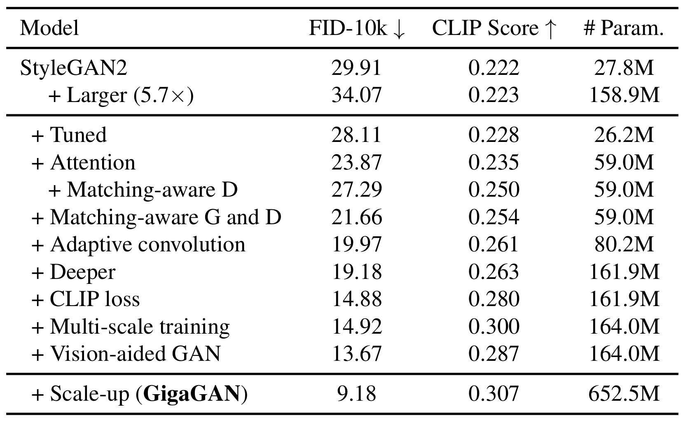
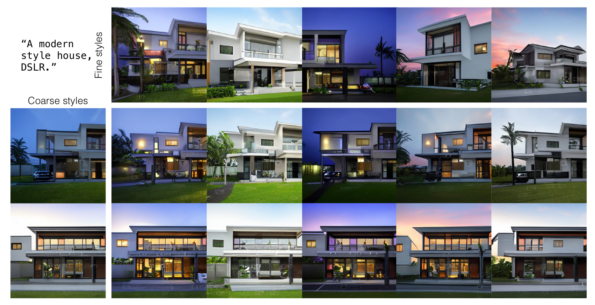
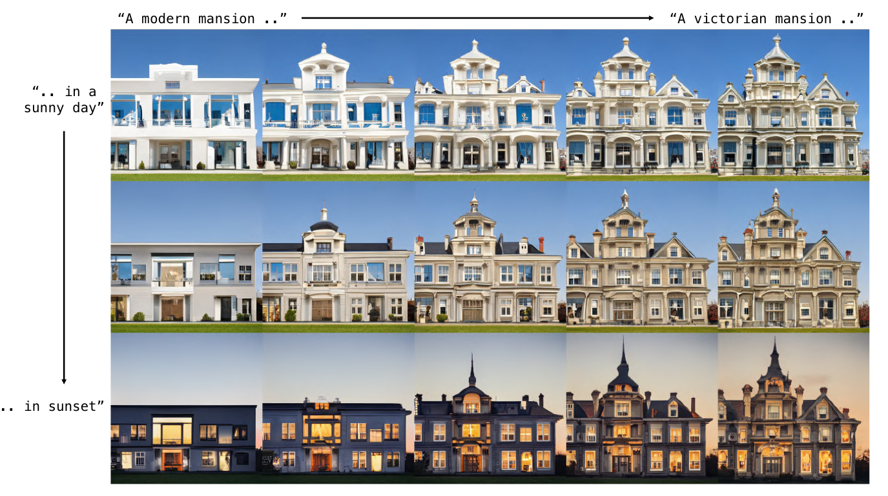

Information
Title: Scaling up GANs for Text-to-Image Synthesis (CVPR 2023)
Reference
Code: NON Official:
Author: Seunghwan Ji
Last updated on April. 14, 2024
Scaling up GANs for Text-to-Image Synthesis#
Abstract#
최근 이미지 생성 task의 모델 성능이 꾸준히 발전중
기존에는 stylegan과 같은 GAN 모델이 주를 이뤘지만 최근 DALLE, Stable Diffusion등 Diffusion 기반의 모델 베이스로 추세가 급격하게 바뀌어버림
“GAN 모델로 Diffusion의 성능을 잡는것은 정말 무리일까?”
GigaGAN은
gan 기반의 모델로 1. 속도점 이점과 2. 다양한 extra editing이 가능하다. (contribution)
속도적 이점
512px의 이미지를 0.13초만에 생성할 수 있다.
16-megapixel(1600만 픽셀, 4k)의 이미지를 3.66초만에 생성할 수 있다.
다양한 활용성
latent space 상 에서의 image editing이 가능하다. (latent interpolation, style mixing …)
Introduction#
최근 Diffusion 기반의 모델들이 이미지 생성 분야에서 좋은 성능을 보여주고 있다.
Diffusion은
기본적으로 학습과 생성 시 iteration이 들어가는데 iteration은 학습의 안정성을 키워주는 장점이 있지만, computation cost가 매우 증가한다는 단점이 있다.
반면에 GAN은
이미지 생성 시 single forward pass만 필요하므로 cost가 크지 않다는 장점이 있지만 single 혹은 multiple object의 생성에는 성능이 뛰어나지만 class가 명확히 정의되지않은 이미지 즉, open world image의 생성에는 어려움이 있다.
“GAN을 더 develop한다면 Diffusion 모델을 넘어설 수 있을까?”
gigaGAN은?
속도적 장점
0.13 s/img (512 size), 3.66s / img (4k)
latent space상에서의 editing 가능(style mixing, interpolation, prompt mixing like stylegan2)
Methods#

Fig. 438 Overall Architecture#
Base Architecture
Base Model은 stylegan2로 선정
\(G = M\times \tilde{G}\)
\(M\)(mapping network) : gaussian distribution에서의 noise를 좀더 disentangle된 w space로 mapping 시키는 network
gigagan에서는 mapping network의 input으로 z와 함께 text condition(c)도 함께 사용
output : \(w\) (vector)
\(\tilde{G}\) : 피라미드 구조의 convolution block들로 random constant 값으로부터 output image \(X\)를 생성하는 generator.
이때 \(w\) vector는 각 layer마다 입력으로 들어가서 feature map의 분포를 scaling함으로써 style을 반영(modulation, demodulation in stylegan2)
Sample-adaptive kernel selection
{kind=link}
Fig. 439 Sample Adaptive Kernel Selection#
도입 배경
단순히 convolution layer의 kernel size만 scaling up을 하면 학습이 안되는 현상
GAN 기반 모델이 (1)text-condition의 (2)오픈 이미지 생성에 한계를 보이는 이유는 convolution network의 구조 때문이다.
convolution 연산은 구조상 같은 레이어상에 있는 하나의 filter가 text condition 주입부터 이미지의 생성까지 모든 부분에 참여하는데 이 부분이 모델의 표현력을 떨어트릴 수 있다.
kernel selection method 적용
레이어마다 \(\{k_{i}\in R^{C_{in}\times C_{out}\times K\times K}\}\)차원의 N개의 kernel set을 두고 style vector w의 affine layer를 거친 weight를 각 kernel값에 weighted summation한 값을 최종 filter로 사용
Fig. 440 Equation of kernel selection method affine layer#
이 때 kernel weight 계산에 softmax를 사용하는데 얘는 differentiable하므로 gradient update 가능
또, 실제로 N개의 kernel을 모두 filter로 사용할 때보다 computation cost가 굉장히 절약된다는 장점
{kind=link}
Interleaving attention with convolution
도입 배경
convolution filter는 receptive field 내부의 local feature 캡처에는 탁월하지만 field 외부의 부분은 학습할 수 없다.
Fig. 441 Receptive Field in Convolution Networks#
이러한 한계점을 극복하기위해 attention layer(\(g_{attn}\))를 추가
단순히 stylegan2에 attention layer를 추가하면 학습에 이상이 생김
Lipschitz 연속성을 만족시키기 위해 attention의 dot product를 L2-distance로 대체
{kind=link}
{kind=link}
Advanced setting
모델의 성능 향상을 위해 stylegan2과 같은 hyper parameter를 사용하고, L2 distance logit의 초기값을 unit normal distribution, scale down, …
\(\tilde{G}\)의 각 convolution block 마다 attentnion layer(self + cross)를 적용
self attention: 이미지 자신의 global feature 학습용
cross attention: 이미지에 text condition 주입용
Generator design
{kind=link}
Fig. 443 GIGAGAN Architecture#
text embedding
pretrained model : clip(frozen; \(R^{C\times 768}\), c is # of tokens)
후에 text encoding에 추가적인 유연성을 위해 mapping network(\(T\))를 추가
text mapping network(\(T\))의 output은 input size와 동일하게 \(R^{C\times 768}\)
이때 output \(t\)를 두 파트로 나눠 사용하는데
\(R^{C-1\times 768}\) : word i index의 local feature를 catch
\(R^{768}\) : word를 global하게 embedding하는 vector
\(t_{global}\)은 latent mapping network(\(M\))의 input으로 사용
\(t_{local}\)은 Generator의 input으로 각 block에 cross attention에 적용
Generator의 layer는 총 5개의 피라미드 구조
\(\{x_{i}\}_{i=0}^{L-1} = \{x_{0},x_{1}, ..., x_{4}\}\) , \(\{S_{i}\}_{i=0}^{L-1} = \{64, 32, 16, 8, 4\}\)
\(x_{0} = X\)(output image)
Discriminator Design
{kind=link}
Fig. 444 Discriminator of GIGAGAN#
2 branch의 구조
text conditioning을 학습
image generating을 학습
\(t_{D}\): text c로부터 pretrained text encoder(CLIP)를 통과시켜 추출한 embedding 값
stylegan에서는 low res의 이미지들은 loss에 반영하지 않았지만, gigagan에서는 이미지의 low feature 표현의 개선을 위해 모든 scale의 이미지를 모두 loss에 반영
이때 feature extractor \(\Phi\)
\(\Phi_{i\rightarrow j}:R^{X_{i}\times X_{i}\times3}\rightarrow R^{X_{j}^{D}\times X_{j}^{D}\times C_{j}}\)
self attention + conv(with stride=2)
각 level에서는 이전 level에서의 feature map을 공유해서 사용하고 low resolution에서 계산이 일어나기때문에 computation resource가 크지 않다.
multi scale의 loss 계산을 위해 ms-i/o loss(multi scale input, output adversarial loss)를 사용
\(V_{MS-I/O}(G, D) = \sum_{i=0}^{L-1}\sum_{j=i+1}^{L}V_{GAN}(G_{i}, D_{ij}) + V_{match}({G_{i}, D_{ij}})\)
\(V_{GAN}\): standard gan loss
\(D_{ij}(x, c) = \psi _{j}(\phi_{i\rightarrow j}(x_{i}), t_{D}) + Conv_{1\times 1}(\phi_{i\rightarrow j}(x_{i}))\):
image의 feature map \(\phi(x)\)에 \(t_{D}\)를 심은 값과 원본 \(\phi(x)\)의 합
앞부분은 text conditioning model을 학습, 뒷부분은 unconditional image generator를 학습
\(V_{match}\)(Matching aware loss)
앞의 gan loss는 생성된 이미지가 얼마나 리얼한지, 그리고 condition \(c\)에 얼마나 가까운지에 대한 loss
하지만 학습 초반에는 condition \(c\)에 상관없이 이미지의 퀄리티로만 분류를 해버림
그래서 discriminator 학습 과정에서 conditioning을 강제로 따르도록 하기위해 \(c\)를 랜덤으로 샘플링(\(\hat{c}\))해 image의 fake pair로 지정
Fig. 445 Matching aware loss#
CLIP contrastive loss
pretrained CLIP을 사용해 contrastive learning
contrastive learning
Fig. 446 constrastive learning#
가까운 class는 가깝게(positive), 그 외 class는 멀게(negative)
condition \(c_{0}\)에 대해 생성된 이미지의 feature vector는 condition \(c_{0}\)의 feature 벡터와는 가깝게 (positive), 나머지 condition의 feature vector와는 멀게(negative) 학습되어야한다.
 Fig. 447 CLIP Loss#
Vision-aided adversarial loss
stylegan에서 discriminator는 training data에 overfitting되는 경향이 있음
이부분을 해결하기위해 생성된 image를 SOTA의 vision 모델을 사용해 뽑아낸 feature map을 Discriminator에 같이 추가해 real / fake를 분류
{kind=link}
{kind=link}
{kind=link}
GAN based upsampler
gigagan은 upsampling 모델에 적용이 가능하다
64x64의 이미지를 3번 downsampling + 6번 upsampling 모델을 통과시켜 1024x1024의 이미지를 생성할 수 있다.
이때 upsampling 부분에 gigagan의 Generator 부분을 적용
upsampling model에 적용할때에는 LPIPS loss를 추가하고, 이미지 생성과정중에 stylegan과 동일하게 gaussian noise를 추가해 real함을 추가
Experiments#
Training and evaluation details
Dataset : LAION2D-en, COYO-700m
upsampler(128 → 1024) : Adobe’s internal Stock images
Pretrained text encoder : CLIP ViT-L/14
CLIP score : OpenCLIP ViT-G/14
machine : A100 gpu, etc.
각각의 method가 정말 효과가 있는가?
 Fig. 448 Table1#
단순 scaling up보다 위 method들을 추가하면 비교적 낮은 FiD와 CLIP score 수치를 보여준다.
Text2Image 모델과 성능 비교

Fig. 449 Table2#
FiD와 inference time을 보면 어느정도 균형을 이루며 경쟁력을 보이고 있다.
Distilled diffusion과 비교
Fig. 450 Table3#
diffutsion의 속도 개선을 위해 distilation한 모델
수치적으로도 우위에 있고, inference time도 여전히 더 빠르다.
Upscaler
!:::{figure-md}

Table4
:::{figure-md} <img src="../../pics/GIGAGAN/img14.png" alt="img14" class="bg-primary mb-1" width="700px"> Super Resolution
그 외
stylegan에 연구된 technique(truncation trick, style mixing, latent interpolation 등) 적용 가능
{kind=link}
{kind=link}
truncation trick
Fig. 451 Truncation Trick#
style mixing
 Fig. 452 Style Mixing#
latent interpolation
 Fig. 453 Latent Interpolation#
{kind=link}
{kind=link}
{kind=link}
Limitation
score 상으로는 어느정도 좋은 성능을 보이지만 실제로 DALLE2 ,Imagen과 같은 SOTA diffusion 모델과 비교하면 develop이 필요함
Fig. 454 Failure Cases#
{kind=link}